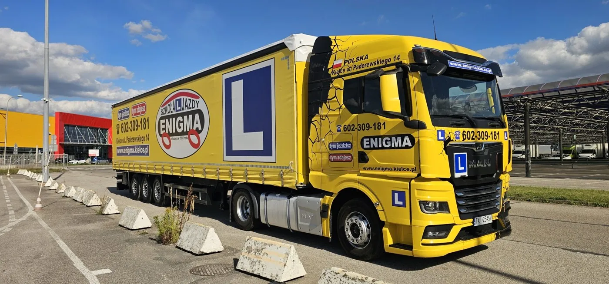

Zawód kierowcy ciężarówki to stabilna praca, a w regionie wciąż brakuje kierowców z kategorią C i C+E. Zebraliśmy w jednym miejscu ceny kursów w ENIGMA, wymagania i kolejne kroki.
Ceny kursów na ciężarówkę w ENIGMA
| Kurs | Cena |
|---|---|
| Prawo jazdy kat. C | od 5 000 zł |
| Prawo jazdy kat. C+E | od 6 000 zł |
| Kwalifikacja wstępna przyspieszona | 2 600 zł |
| Pakiety C + CE oraz C + CE + kwalifikacja | w sklepie ENIGMA |
Pakiety są korzystniejsze niż kursy kupowane osobno, a kursy dla kierowców zawodowych można sfinansować nawet w 80% z dofinansowania dla pracodawców.

Od ilu lat prawo jazdy kat. C
Prawo jazdy kategorii C można uzyskać od 21 lat, a od 18 lat razem z kwalifikacją wstępną. Kategorię C+E robi się, mając już prawo jazdy kategorii C.
Kolejne kroki
- Badania lekarskie i psychologiczne. Badania psychologiczne zrobisz w Pracowni Badań Psychologicznych ENIGMA przy ul. Paderewskiego 14.
- Profil Kandydata na Kierowcę w wydziale komunikacji.
- Kurs i egzamin państwowy w WORD Kielce.
- Kwalifikacja wstępna, jeśli chcesz zawodowo przewozić towary.
Masz pytania? Zadzwoń, doradzimy.
Biuro ENIGMA, ul. Paderewskiego 14 w Kielcach.
Najczęstsze pytania
Ile kosztuje prawo jazdy kat. C w Kielcach?
W Szkole Jazdy ENIGMA kurs kat. C kosztuje od 5 000 zł, a kat. C+E od 6 000 zł.
Od ilu lat można zrobić prawo jazdy kat. C?
Od 21 lat, a od 18 lat razem z kwalifikacją wstępną.
Czy kurs na ciężarówkę można dofinansować?
Tak, pracodawcy z woj. świętokrzyskiego mogą dostać 75-80% dofinansowania z projektu „Pracownik kapitałem firmy”.